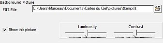
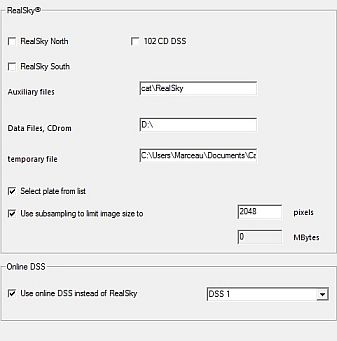

Pictures
From the menu: Setup → Pictures
There are two locations to manage the FITS-formatted pictures:
- CdC_directory\data\pictures\sac\ which contain the SAC object pictures.
- Your_Documents\Cartes_du_ciel\pictures\ which is used to store the downloaded pictures from the DSS or the temporary pictures from RealSky.
Objects
 From the menu: Setup → Pictures → Objects
From the menu: Setup → Pictures → Objects
SkyChart can display deep sky objects in your charts in a more realistic way by showing FITS pictures. This can be independent of the display of symbols for deep sky objects. It can do this in any field of vision.
Before SkyChart can do so, the program needs to categorize all those pictures and load their characteristics into a database. It does this by a scan of the directory were you put those pictures, usually this is the data/pictures sub-directory of your SkyChart installation.
If necessary, you can change the path by entering it directly in the input area, or setting it with a dialog box after clicking the  icon.
icon.
When this scan is finished, you will retrieve a message like: There are xxxx catalogued images (9894 in V3 beta 0.1.4).
Don't forget to check “Show object pictures on the chart”, at the bottom of the window. Otherwise these pictures will not be displayed on the chart.
Also here you can set the Luminosity and Contrast of the images.
If you haven't installed any of those pictures, I can recommend you to install the SAC picture package.
Background Picture

From the menu: Setup → Pictures → Background
Here you can open a FITS-file to display by entering its file name. After a new installation, the default directory to read from is C:\Documents and Settings\[gebruiker]\Local Settings\Application Data\SkyChart\pictures (Windows) or /home/[user]/.skychart/pictures (Linux). In this directory you usually will find the last FITS-file you downloaded from the DSS resources. (named “$temp.fit”). You can change the directory to any other source of FITS-files. For example, if you did install the SAC pictures package with a typical installation of SkyChart, you can open FITS images of deep sky objects in your chart from the /usr/share/apps/skychart/pictures/sac (Linux) or C:\Program Files\ciel\pictures\sac (Windows) directory or After opening the file. The active chart will be repositioned according to the settings of the selected picture.
You can set Luminosity and Contrast of the image and you need to check “Show this picture”.
{kind=link}
DSS RealSky

From the menu: Setup → Pictures → DSS RealSky
SkyChart can display FITS-picures for any place in the chart. This window is meant to configure from which sources to retrieve those pictures. You can get them by Internet, or if you have a RealSky CD-ROM set, from your CD-ROM player
{kind=link}
RealSky
Here you can set the RealSky CD-ROM location for your computer. You have to specify which set of CDs you are using, where the auxiliary files are to be found, the path to your CD reader and where the temporary files can be stored.
You can specify if you want to select a plate from a list. You can also choose to limit the size of the picture.
Online DSS
If you are connected to Internet, you can download FITS-pictures from the Digital Sky Survey (DSS) site. With the combo box you can specify which set of DSS pictures you want to retrieve.
The size of pictures that you request are limited by the field of vision. Usually, you can't retrieve pictures when you set SkyChart to a FOV larger than two degrees of arc. The larger the FOV, the greater chances are that your request times out, or isn't supported by the server at all. You need to realize that it takes a lot of CPU power at the server site to generate a picture, you have to be patient.
To read more about how to download a picture from the DSS, click here.
To read more about the display of these images, click here.
To read more about the configuration of the DSS resources to download those images, press here.